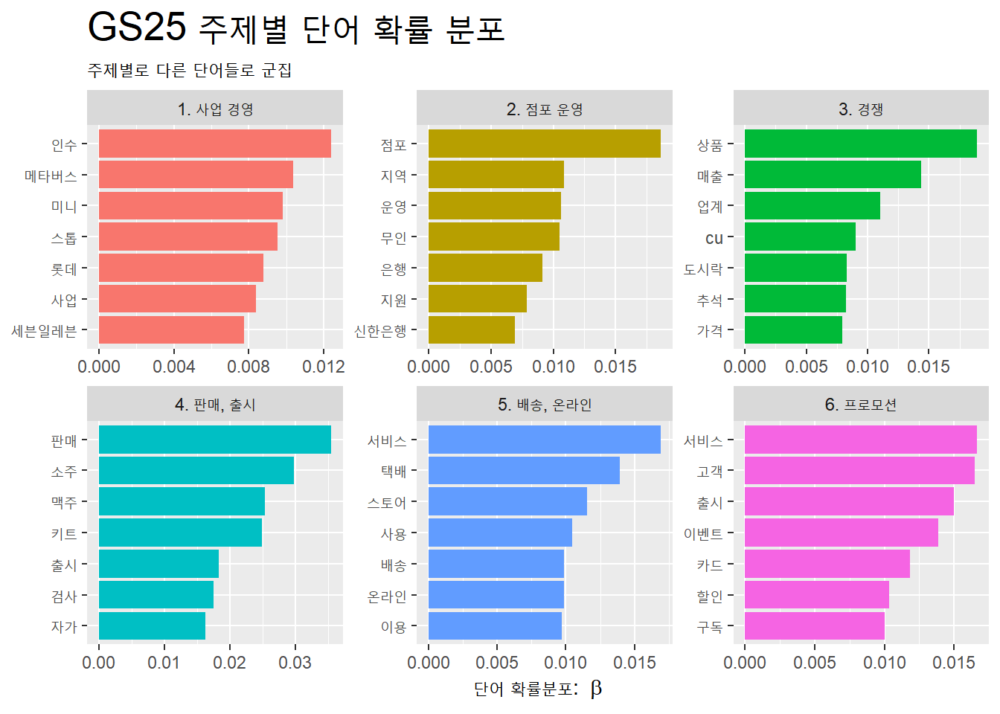
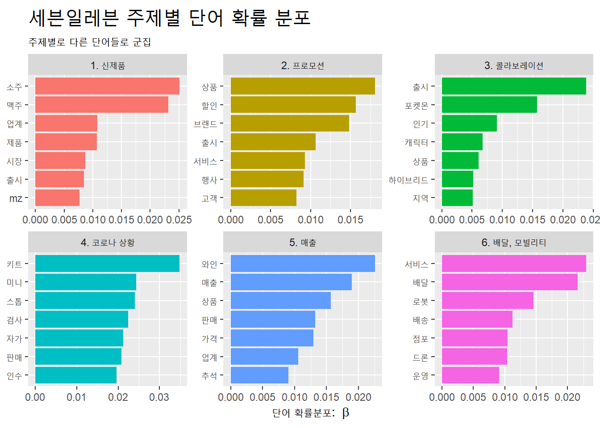

0.0.1 연도별 편의점 트렌드 기준 편의점 브랜드 언론보도 분석
0.0.1.1 편의점 트렌드 방향성
.png)
- 2021년, 2022년 모두 ‘맥주’, ‘소주’ 등 주류 상품 출시 및 판매에 집중하는 모습을 보이고 있고, 이에 대해 소비자로 하여금 긍정적인 반응을 얻고 있음.
- 2021년 ‘지역’ 기반의 점포 운영이 키워드로 등장하였는데, 2022년 편의점에서 ‘청소년’, ‘안전’ 등 동네 치안과 관련하여 여러 캠페인을 실시하는 것으로 보아 ’동네 거점 기능’이 더 고도화되었음을 알 수 있음.
- 2021년에는 ‘결제 서비스’, ‘배달 서비스’ 등 편의점에 기본적인 기능에 집중을 하였다면, 2022년에는 ‘포켓몬’ 등 타 브랜드와의 콜라보레이션을 통해 프로모션을 펼치고 있음.
0.0.1.2 편의점 브랜드별 특징

- GS25 : 스타트업 인수를 통해 사업 고도화를 진행하고, 은행 및 택배 등 다른 산업군의 역할들을 편의점에 적용하려는 시도들이 많이 언급됨. 즉, ’사업확장’을 중심으로 평판을 형성하고 있음.

- 세븐일레븐 : 주류 중 와인 상품 다양화를 진행하고, 포켓몬 캐릭터를 활용하여 제품을 판매하고 팝업스토어를 운영함. 즉, ’제품 브랜딩’을 중심으로 평판을 형성하고 있음. 더불어 모빌리티 사업의 확장과 관련하여서도 높은 빈도로 언급됨.

- CU : 카드 제휴 및 할인 행사 등의 프로모션을 중심으로 마케팅을 진행하고, 메타버스와 결합하거나 친환경을 주제로 회사 브랜드를 형성하는데 집중하고 있음. 즉, ’회사 브랜드 캠페인’을 중심으로 평판을 형성하고 있음.
0.0.2 연도별 편의점 트렌드 기준 GS25 언론보도 분석
0.0.2.1 감정분석 (긍정어, 부정어)
- GS25의 핵심 키워드 : 편의점과 관련된 키워드와 비교하였을 때, ‘인기’, ‘할인’, ‘이벤트’, ‘혜택’ 등의 커머스 성격과 관련된 키워드들은 유사하게 나타남. 하지만 ‘맛집’, ’최저가’는 GS25가 두드러지게 보이는 키워드로서 전체적인 편의점 트렌드에서 핵심 키워드를 선점하고 있음을 예상함.
- GS25의 남성혐오 논란 : 2022년 남성 혐오 논란이 있었는데, 이는 편의점 부정어 2위 ’혐오’와 연결되는 이슈로, GS25가 부정적인 이미지를 얻는데 큰 영향을 미쳤음을 알 수 있음.
- CSR 및 CSV 측면 : GS25는 ‘화재 시, GS25 소화기 제공’, ‘국내 최초 가맹점 사기 피해 보상 보험 지원’ 등 편의점 소비와 직간접적인 마케팅을 펼쳐왔음. 2022년 편의점 부정어 중 ’장애인’의 경우, 장애인 직업 훈련과 관련하여 일자리 창출 측면에서 긍정적인 의미와 장애인 편의시설이 갖추어질 필요가 있다는 장애인 이동권 측면에서 부정적인 의미를 함께 내포하고 있음. 이와 관련하여 2021년 GS25 부정어 중 ’장애인’을 살펴보면, ’늘봄스토어’를 통해 장애인 취업 기회를 이전부터 제공해왔음을 알 수 있음. 즉, 사회적인 분위기에 알맞은 CSV를 펼치고 있음을 알 수 있음.
0.0.2.2 토픽모델링
.png)
.png)
- 상품 고도화(주류, 도시락) : 2021년, 2022년 모두 편의점 상위주제어에는 맥주, 와인, 상품 등 ‘제품 출시’가 높은 상위 주제어로 언급됨. 이에 대해 GS25는 ’주류 판매’, ‘도시락 상품’ 군집에서 알 수 있듯이 특정 제품 카테고리의 고도화를 진행함. 특히 주류는 편의점 트렌드와 부합하여 시너지를 내고 있음.
- 배달 및 택배 서비스 : 2021년 편의점 ‘유통’ 군집에서 ‘gs’, ‘배달’ 등의 키워드가 모여있음. 그리고 2021년 GS25 ‘배달서비스’ 군집에서 ‘배송’, ‘배달’ 등의 키워드가 모여있음. 즉, 2021년에 ‘배달 서비스’와 관련하여 GS25가 선도하고 있음을 예상해볼 수 있음. 하지만 2022년 GS25 ’배달 서비스’ 군집이 상위에 형성되지 않음을 통해 GS25가 앞으로 계속해서 선점하고 싶은 이미지가 아님을 알 수 있음.
- 결제 방식 : 2021년 편의점 ‘결제방식’ 군집을 살펴보면, ‘카드’, ‘포인트’, ‘결제’ 등의 키워드를 중심으로 결제의 다양화 모습을 살펴볼 수 있음. 이메 발맞추어 2021년 GS25 ‘결제방식’ 군집을 살펴보면, ‘페이’, ‘서비스’ 등으로 앞에 언급한 결제의 다양화를 실천하고 있음. 페이 결제, 택배 선결제를 바탕으로 ’결제 방식’을 개선하였고, 배달 서비스를 시작하였으며, LG유플러스와 협약하여 AI, 빅데이터 솔루션을 도입하고 LG 유플러스 멤버십 대상 구독 서비스를 선보이기도 함.
- 점포 운영(지역, 안전, 청소년) : 2021년, 2022년 편의점 ‘점포 운영’ 군집을 살펴보면 ‘지역’, ‘안전’, ‘청소년’ 키워드가 주로 언급됨. 일상생활 반경 내 편의점의 갯수가 증가함에 따라 편의점이 단순 커머스의 기능 뿐만 아니라 ‘지역 기반’, ‘청소년의 높은 접근성’을 가진 ’안전 장소’로 인지되고 있음. 즉, ’동네 거점 기능’이 고도화되었음을 알 수 있음. 토픽모델링에서 나타나지 않았지만, 위에서 제시한 긍정어, 부정어를 살펴보았을 때, GS25가 동네 주요 기점’ 역할로서 장애인 취업 지원, 미아 방지 캠페인, 소화기 제공 등 노력하는 모습들과 연결짓어 생각해볼 수 있음.
0.0.3 결론 : GS25의 평판 관리 방향 제안
- 결제 방식 : 편의점 트렌드에 맞게 GS25 역시 적극적으로 결제 방식의 다양화를 실천하고 있음. 다만, 이와 관련하여 CU가 카드 회사와의 제휴 및 할인 혜택을 통해 ‘결제 방식의 편리함’ 키워드를 선점하고 있음.
- 콜라보레이션 : GS25의 경우, 원소주와 포켓몬 캐릭터 콜라보레이션을 통해 성공적으로 마케팅을 펼침. 다만, 세븐일레븐이 팝업스토어 등을 통해 포켓몬 캐릭터 콜라보레이션을 극대화함으로써 편의점 브랜드 사이에서 상대적인 이점을 갖지는 못했다고 판단됨.
- 동네 거점 기능 : 타브랜드와 뚜렸하게 구별되어 GS25가 독보적으로 가지고 있는 이미지임. 단순 이미지에 머무는 것이 아니라 캠페인, 점포 운영에 있어서도 적극적으로 핵심 컨셉으로 활용됨. 하지만 토픽모델링과 관련 보도 상위 주제어에서 두드러지게 나타나지 않고 있음. 이를 위해서는 캠페인 운영에 있어 관심 및 구전효과를 극대화할 수 있는 마케팅적인 요소를 더해 ’동네 거점 기능’을 중심으로 평판이 형성될 수 있도록 하는 것이 필요함.